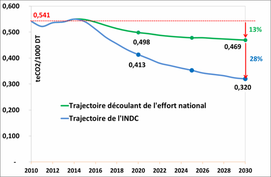
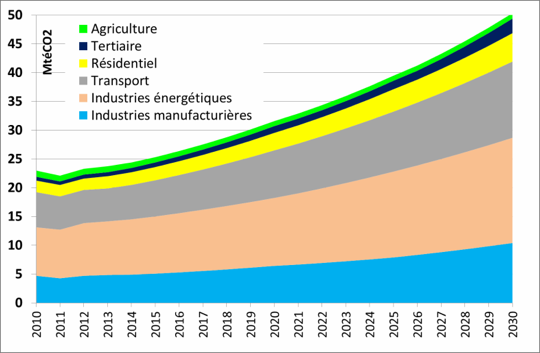

CONVENTION CADRE DES NATIONS UNIES SUR LES CHANGEMENTS CLIMATIQUES
CONTRIBUTION PREVUE DETERMINEE AU NIVEAU NATIONAL
TUNISIE
AOUT 2015
Synthèse
Ce document synthétise la Contribution Prévue Déterminée au niveau National (CPDN – INDC, en anglais) de la Tunisie aux fins de sa soumission à la Conférence des Parties de la Convention Cadre des Nations Unies sur les Changements Climatiques. Ce rapport a été établi conformément à la décision 1/CP.20 (Appel de Lima en faveur de l’action climatique), qui met notamment l’accent, dans son article 14, sur la clarté, la transparence et la compréhension du rapport de l’INDC. Il s’est appuyé sur d’importants travaux de modélisation et de calcul des réductions des émissions dans les différents secteurs ainsi que d’identification et d’évaluation des mesures d’adaptation.
Ce document a été réalisé sur la base de larges concertations1 entre les principales parties-prenantes concernées par la problématique des changements climatiques en Tunisie, incluant les institutions publiques, le secteur privé et la société civile. L’élaboration de la contribution de la Tunisie a été également largement basée sur les stratégies sectorielles et horizontales existantes, telles que la stratégie nationale sur les changements climatiques élaborée en 2012, la stratégie d’efficacité énergétique, le Plan Solaire Tunisien et les stratégies d’adaptation des différents secteurs et domaines (littoral, agriculture, ressources en eau, santé, tourisme, etc.).
Dans sa contribution, la Tunisie se propose de réduire ses émissions de gaz à effet de serre dans tous les secteurs (énergie, procédés industriels, agriculture, forêt et autres utilisations des terres, et déchets) de manière à baisser son intensité carbone de 41% en 2030 par rapport à l’année de base 2010. L’effort d’atténuation proviendra plus particulièrement du secteur de l’énergie qui représente à lui seul 75% des réductions des émissions, sur les bases desquelles a été réalisée cette baisse de l’intensité. Il est prévu que le secteur de l’énergie réduise son intensité carbone en 2030 de 46% par rapport à l’année 2010, dans le cadre de la politique de transition énergétique préconisée par l’Etat.
La Tunisie, qui fait déjà des efforts importants d’atténuation dans sa ligne de base, prévoit de baisser de manière inconditionnelle et avec son propre effort, de 13% son intensité carbone par rapport à l’année 2010, soit environ le tiers de son INDC. Pour la réalisation du reste de l’objectif, soit une baisse additionnelle de l’intensité carbone de 28% en 2030 par rapport à celle de l’année 2010, la Tunisie compte sur l’appui de la communauté internationale en termes de financement, de renforcement des capacités et de transferts technologiques.
Les réductions des émissions par rapport au scénario de référence seraient de l’ordre de 26 millions de teCO2 en 2030 et 207 millions teCO2 sur la période 2015-2030.
La mise en œuvre de la contribution tunisienne en matière d’atténuation nécessite la mobilisation d’importants moyens financiers estimés à environ 18 milliards US$ pour la couverture des besoins d’investissement et le financement des programmes de renforcement des capacités.
L’effort national nécessaire pour réaliser la contribution inconditionnelle de la Tunisie est estimé à presque 10% des besoins totaux en investissement dans l’atténuation. L’effort national concerne exclusivement le secteur de l’énergie qui constitue la part la plus importante des besoins en investissement.
En ce qui concerne l’adaptation, la Tunisie reste très vulnérable au réchauffement climatique attendu dans la région et ses implications en termes de fortes hausses des températures, de baisse des précipitations et d’augmentation de niveau de la mer. Les impacts socio-économiques et environnementaux toucheront notamment les ressources en eau, l’agriculture, les écosystèmes naturels et artificiels, le littoral, la santé et le tourisme.
Les coûts incrémentaux des mesures indispensables pour l’adaptation de ces secteurs et domaines s’élèveraient à environ 2 milliards de dollars et devraient être supportés totalement par la communauté internationale dans le cadre de la lutte mondiale contre les changements climatiques.
En somme, les besoins additionnels totaux en financement pour l’atténuation et d’adaptation seraient ainsi de l’ordre de 20 milliards US$ pour le financement des besoins en investissement et de renforcement de capacités.
1. Circonstances nationales
La Tunisie est située au Nord de l’Afrique, sa superficie est d’environ 164 000 km² avec une côte s’étendant sur 1300 km le long de la mer méditerranée. Le climat se caractérise par son aridité et sa variabilité, avec des précipitations varient entre 800 mm par an au Nord et 150 mm par an au Sud.
Le taux de croissance démographique n’a cessé de baisser pour atteindre 1% par an durant la dernière décennie. Ainsi, la Tunisie a compté environ 11 millions d’habitants en 2014 contre 9,9 millions en 2004.
La Tunisie est considérée parmi les pays méditerranéens les plus exposés aux changements climatiques. Les principaux risques auxquels elle serait confrontée sont l’augmentation de la température, la baisse des précipitations, l’élévation du niveau de la mer et la hausse des phénomènes climatiques extrêmes (inondations et sécheresses). Ces risques devraient se traduire par une forte vulnérabilité environnementale et socioéconomique.
Consciente de ces enjeux, la Tunisie a adopté une politique volontariste de lutte contre les changements climatiques aussi bien sur le plan de l’atténuation que de l’adaptation.
Ainsi, adhérant activement à la dynamique internationale de lutte contre les changements climatiques, la Tunisie a rempli tous ses engagements envers la CCNUCC, dont le dernier en date est la soumission du premier rapport biennal en décembre 2014.
Par ailleurs, suite à la transition politique, déclenchée en décembre 2010, la Tunisie a adopté le 26 janvier 2014 une nouvelle constitution qui a intégré la lutte contre les changements climatiques comme une constante constitutionnelle. Selon l’article 44 de la nouvelle constitution, l’Etat doit en effet « garantir un environnement sain et équilibré et participer à l’intégrité du climat en fournissant les moyens nécessaires ».
La politique de lutte contre les changements climatiques se reflète, en particulier dans le secteur énergétique, par une politique résolument volontariste de transition énergétique qui vise aussi à répondre aux défis majeurs du secteur, et en particulier :
- Un défi de sécurité d’approvisionnement énergétique dû au déficit croissant de la balance énergétique et à la forte dépendance aux énergies conventionnelles ;
- Un défi de durabilité économique lié à la fluctuation des prix internationaux de l’énergie et à ses implications sur la balance des paiements et les finances publiques.
En dépit des efforts déployés par la Tunisie depuis trois décennies en matière de maîtrise de l’énergie, et afin de relever ces défis, les autorités tunisiennes ont décidé depuis 2013 de s’engager dans un renforcement sans précédent de la politique de maîtrise de l’énergie avec ses deux compsoantes de l’efficacité énergétique et des énergies renouvelables. Cette transition vise, à l’horizon 2030, une réduction de la demande d’énergie primaire de 30% par rapport au scénario tendanciel et un taux de pénétration des énergies renouvelables dans la production d’électricité de 30%.
2. La Contribution Tunisienne en matière d’atténuation
2.1. Objectif
|
Type d’objectif
|
% de baisse de l’intensité carbone par rapport à une année de base
|
|
Année cible
|
2030
|
|
Période de mise en œuvre
|
2015-2030
|
|
Année de base
|
2010
|
|
Objectif global de l’INDC
|
La contribution de la Tunisie en matière d’atténuation vise une réduction de 41% de son intensité carbone en 2030 par rapport à celle de 2010. L’intensité carbone est calculée comme étant le rapport entre le total des émissions de gaz à effet de serre (exprimées en tonnes-équivalent CO2) et le PIB à valeur constante 2005.
Dans le secteur spécifique de l’énergie, la Tunisie vise à réduire son intensité carbone de 46% en 2030 par rapport à celle de l’année 2010.
|
|
Objectifs inconditionnel et conditionnel d’atténuation
|
La contribution inconditionnelle de la Tunisie correspond à une baisse de l’intensité carbone de 13% par rapport à celle de l’année de base 2010, soit environ 1/3 de l’objectif global.
La contribution conditionnelle permet une baisse additionnelle de 28% de l’intensité carbone par rapport à l’année de base 2010.
Le graphique suivant représente la trajectoire de la contribution conditionnelle et inconditionnelle de la Tunisie sur la période 2015-2030 :
Trajectoire de la contribution conditionnelle et inconditionnelle de la Tunisie sur la période 2015-2030

|
|
Equité et Ambition
|
Partie Non-Annexe 1 de la CCNUCC, la Tunisie va effectivement contribuer à l’effort planétaire d’atténuation des émissions de gaz à effet de serre (GES). La Tunisie considère que sa contribution est équitable et ambitieuse, pour trois principales raisons :
- Grâce à sa contribution totale (inconditionnelle et conditionnelle), la Tunisie réduit son Intensité carbone de 41% par rapport à celle de 2010. L’effort national (assimilable à la contribution inconditionnelle) engendre une baisse de l’intensité carbone à l’horizon 2030 de 13% par rapport à l’intensité carbone de 2010, soit près du tiers de l’objectif.
- La Tunisie s’engage à faire baisser son intensité carbone en dessous de celui de l’année 2010, bien qu’elle n’ait participé qu’à hauteur de 0,07% dans les émissions mondiales en 2010.
- Grâce à sa contribution totale, à l’horizon 2030, les émissions par habitant atteindraient 3,4 teCO2/habitant, alors que les émissions mondiales en 2010 atteignaient déjà 7 teCO2/habitant.
|
2.2. Couverture et portée
|
Couverture géographique
|
Ensemble du territoire national
|
|
% des émissions nationales couvertes par l’effort d’atténuation
|
100% des émissions de l’année 2010
|
|
Secteurs ciblés
|
Energie, Procédés industriels, Agriculture, Forêt et Autres utilisations des Terres (FAT) et Déchets
|
|
Gaz ciblés
|
CO2, CH4 et N2O
|
2.3. Besoins en financement de l’atténuation
Besoins en investissement
L’objectif d’atténuation nécessiterait la mobilisation d’un montant d’investissement total sur la période 2015-2030 de l’ordre de 17,5 milliards US$, répartis entre les secteurs comme suit :
Besoins de financement pour le soutien au scénario d’atténuation des GES de l’INDC (millions US$)
|
SECTEURS/DOMAINES
|
Total
|
|
Energie
|
14 917
|
|
|
6 991
|
|
|
7 926
|
|
AFAT
|
1 533
|
|
|
967
|
|
|
566
|
|
Déchets
|
972
|
|
|
70
|
|
|
902
|
|
TOTAL
|
17 422
|
Environ 85% des besoins en financement devraient être mobilisés pour le secteur de l’énergie, dont 40% pour l’efficacité énergétique et 45% pour les énergies renouvelables.
Besoins en renforcement de capacités et transfert technologique
Les mesures de renforcement de capacités requises pour faciliter la réalisation de l’objectif de l’INDC concernent notamment, la formation des acteurs, le renforcement institutionnel, l’assistance technique aux programmes sectoriels d’atténuation, le soutien à la R&D et l’innovation.
Le coût total pour couvrir les besoins en renforcement de capacités est estimé à environ 523 millions US$ sur la période 2015-2030, dont la plus grande partie sera destinée au secteur de l’énergie (environ 450 millions US$).
Par ailleurs, des programmes de transferts de technologies seront nécessaires pour permettre l’accès de la Tunisie au savoir-faire et aux moyens industriels appropriés pour assurer la durabilité de sa contribution. Ces transferts pourront se faire, entre autres, au moyen de partenariats industriels avec les détenteurs des technologies. La Conférence des Parties de la Convention doit aussi mobiliser les mécanismes appropriés permettant de faciliter ces transferts, selon les besoins spécifiques à chacune des mesures d’atténuation adoptées.
L’effort national et l’appui de financement international
· L’effort national nécessaire pour réaliser la contribution inconditionnelle de la Tunisie est estimé à presque 10% des besoins totaux en investissement dans l’atténuation. L’effort national concerne exclusivement le secteur de l’énergie qui constitue la part la plus importante de l’objectif d’atténuation.
· L’appui international devrait focaliser sur le financement du reste des besoins en investissement sous diverses formes (lignes de crédit concessionnelles, dons, investissements directs, intégration dans des marchés carbone, etc.).
Dans le secteur de l’Energie, une partie de l’appui financier international devrait servir à renforcer le Fonds de Transition Energétique (FTE).2 Ce fonds a été créé par l’Etat tunisien en 2014 Comme un instrument central pour la mise en œuvre de sa politique de transition énergétique.
Enfin, l’effort international se focalisera aussi sur le financement des programmes de renforcement de capacités et de transfert technologique.
Recours aux Mécanismes de marché carbone
Pour soutenir les besoins en financement de son objectif d’atténuation, la Tunisie souhaiterait, en plus des appuis financiers directs précisés ci- dessus, recourir aux mécanismes de marché carbone, notamment pour les programmes suivants :
- Plan Solaire Tunisien
- Atténuation dans le secteur cimentier, et dans tout autre secteur disposé à s’intégrer dans des marchés carbone
- Efficacité énergétique et énergies renouvelables dans le secteur du bâtiment
2.4. Processus de planification
Préparation de l’INDC
Les phases préparatoires de l’INDC ont démarré déjà en juillet 2014, avec le lancement d’une série d’ateliers de concertation associant les principales parties prenantes impliquées dans le processus lié aux changements climatiques (administration publique, société civile, secteur privé et experts du domaine).
Ce processus s’est intensifié dès la publication des décisions de la COP20 de Lima, définissant les règles de réalisation et le contenu des INDCs. Le processus de concertation s’est poursuivi jusqu’à la validation.
Mise en œuvre de l’INDC
Dans sa politique habituelle de développement, la Tunisie fournit déjà des efforts importants en matière d’atténuation des GES, et ceci dans tous les secteurs-clés engendrant des émissions de GES : (i) Elle mène une politique volontariste ininterrompue de maîtrise de l’énergie depuis une trentaine d’années ; d’où une intensité énergétique parmi les plus basses dans la région Moyen-Orient/Afrique du Nord, (ii) Elle a entrepris d’importantes réalisations en matière de reboisement et de préservation des écosystèmes forestiers, ce que confirme le bilan d’absorbeur net de CO2 de l’ensemble du secteur AFAT dans l’inventaire des GES de 2010, (iii) Elle a, depuis toujours, misé sur l’amélioration de la productivité de l’agriculture (y compris l’élevage) et optimisé l’utilisation des intrants, (iv) Elle a systématisé la mise en place de décharges contrôlées, et a lancé depuis 2006 des projets MDP de dégazage et de torchage des gaz sur les 8 principales décharges du pays.
La Tunisie a été parmi les pays pionniers à préparer plusieurs NAMAs3, se tenant donc prête dans la perspective de la signature d’un nouvel accord climatique, et a été parmi les premiers pays non-annexe 1 à soumettre son premier rapport biennal (31 décembre 2014).
Ces nombreuses initiatives prouvent la détermination de la Tunisie à aller rapidement au-delà de la ligne de base déjà volontariste qu’elle a adoptée depuis plusieurs années, et à entamer une trajectoire vertueuse et ambitieuse d’atténuation des émissions de GES, s’appuyant aussi bien sur ses ressources propres que sur celles de la Communauté internationale.
Dans le cadre de sa contribution au traitement de la problématique des changements climatiques, la Tunisie intensifiera sa politique d’atténuation des GES dans plusieurs secteurs :
Secteur de l’énergie : Le plan d’atténuation envisage l’intensification de la promotion de l’efficacité énergétique dans tous les secteurs consommateurs et pour tous les usages énergétiques. Une vingtaine d’actions d’efficacité énergétique ont été incluses dans le calcul des émissions évitées couvrant l’ensemble des secteurs industriel, du bâtiment, des transports et de l’agriculture. Cela devrait permettre une baisse de la demande d’énergie primaire en 2030 de l’ordre 30% par rapport à la ligne de base.
Ce plan préconise également le recours de plus en plus significatif aux énergies renouvelables, notamment via le Plan Solaire Tunisien (PST). Celui-ci portera la part des énergies renouvelables dans la production d’électricité à 14% en 2020 et à 30% en 2030, alors qu’elle n’était que de 4% en 2015.
Pour ce faire, le PST visera une capacité installée en électricité renouvelable de 3815 MW en 2030 ; dont 1755 MW éoliens, 1610 MW solaires PV et 450 MW de CSP.
En ce qui concerne le solaire thermique, la Tunisie compte tripler le taux de diffusion de chauffe-eau solaires, qui passera à 220 m² de capteurs par 1000 habitants en 2030, contre 73 en 2015.
Secteur procédés industriels : Le plan d’atténuation envisage l’implantation d’une NAMA dans le secteur cimentier dès 2016, et l’accès de ce secteur à des marchés carbone dès 2021.
Agriculture, Forêts et Changements d’utilisation des terres : Le plan d’atténuation envisage l’intensification des capacités d’absorption de CO2 de la forêt et de l’arboriculture, grâce à l’intensification des actions de reboisement, de consolidation et d’augmentation des réserves de carbone dans les milieux forestiers et pastoraux. De même, le bilan carbone de l’agriculture sera bonifié en recourant à des pratiques moins génératrices d’émissions ; telles que l’optimisation des régimes alimentaires des animaux domestiques, la promotion de l’agriculture biologique ou les pratiques d’agriculture de conservation, ainsi que la valorisation énergétique des déchets animaux.
Déchets : Le plan d’atténuation envisage la mise en place, dès 2016, d’un programme d’implantation d’unités de transformation des déchets solides en combustibles RDF (Refuse Derived Fuel) destiné aux unités cimentières, ainsi que d’un programme d’implantation de systèmes de dégazage dans les décharges contrôlées. La valorisation électrique des gaz récupérés serait envisagée, au moins dans les principales décharges. Cette option énergétique est couverte dans le scénario bas-carbone du secteur de l’énergie.
Le plan d’atténuation dans le secteur de l’assainissement, envisage notamment l’installation de capacités d’énergie solaire PV dans les STEP, d’équipements de digestion de biogaz pour la production d’électricité, et la réduction de la DCO (demande chimique en oxygène) dans les eaux usées industrielles.
Suivi de mise en œuvre de l’INDC
En vue de s’assurer de l’effectivité de la mise en place et de l’efficacité des actions prévues dans le cadre de sa contribution, la Tunisie établira un système rigoureux de suivi et d’évaluation des actions et des résultats atteints4. Ce système permettra aussi d’ajuster et éventuellement de réorienter les actions.
Ce système s’établira selon une approche complète de Mesure, de Notification et de Vérification (MRV)5, et s’appliquera à toutes les composantes formant la stratégie nationale d’atténuation d’émissions de GES. Le système MRV tunisien s’articulera autour de trois grandes composantes des GES, à savoir :
- MRV des émissions nationales de GES, qui devra se charger de l’élaboration annuelle des inventaires de GES, de leur notification et de leur vérification.
- MRV des mesures d’atténuation, qui devra se charger de suivre, notifier et faire vérifier les impacts (réductions d’émissions, intensités carbone, co- bénéfices, etc.) de toutes les mesures d’atténuation, et plus particulièrement celles développées sous forme de NAMA ; selon les règles édictées au niveau national et international.
- MRV des soutiens, qui devra se charger de suivre, notifier et faire vérifier les actions de soutien à l’atténuation des émissions de GES et à l’adaptation réalisées, et pour lesquelles des appuis ont été reçus (financement, transfert technologique et renforcement des capacités).
2.5. Approches méthodologiques
Méthodologie d’inventaire
Inventaire réalisé conformément aux lignes directrices de l’IPCC 2006.
Potentiel de réchauffement global
Valeurs PRG utilisées à partir du document « IPCC Fourth Assessment Report- AR4 - Climate Change 2007 » :
Scénario de ligne de base
Les approches de calcul des émissions de GES découlent directement des lignes directrices de l’IPCC 2006. Le calcul des émissions est basé sur la prévision des données d’activité, lesquelles sont déduites par simulation, en utilisant les approches suivantes :
- Secteur de l’énergie : L’évaluation des émissions du scénario de ligne de base s’est appuyée sur une approche principalement bottom-up fondée sur la modélisation de la demande d’énergie finale par secteur et par forme d’énergie en utilisant le modèle de prospective MEDPRO. Cela permet ensuite une prévision de la demande en énergie primaire par énergie, sur la base des hypothèses d’évolution des paramètres du secteur électrique (consommation spécifique, pertes et mix).
Le scénario de ligne de base comprend déjà une composante atténuation puisqu’il correspond à une baisse moyenne de l’intensité d’énergie primaire de l’ordre de 1% par an sur la période 2010-2030.
Les émissions de la ligne de base sont évaluées, année par année, de 2010 à 2030, en appliquant l’approche sectorielle des lignes directrices de l’IPCC 2006, à un niveau très fin (Données d’activité et facteurs d’émission par secteur et par produit énergétique). Cette approche sectorielle couvre le CO2, le CH4 et le N2O. Les émissions annuelles de la ligne de base sont donc ensuite exprimées en tonnes-équivalent CO2. En utilisant cette approche, il sera plus facile de recouper les résultats de cette ligne de base, par rapport aux futurs inventaires de GES, qui seront réalisés dans le cadre du système MRV tunisien.
Le graphique suivant présente la décomposition de la ligne de base de l’énergie par secteur :

Décomposition de la ligne de base de l’énergie par secteur
- Procédés industriels : L’évaluation des émissions du scénario de ligne de base s’est principalement appuyée sur les résultats de la NAMA ciment.6
Les simulations, pour les autres sources de procédés, se sont basées soit sur une liaison avec le PIB, soit sur le principe de valeur fixe de production.7
- Forêt et Autres Utilisation des Terres : La ligne de base considère une poursuite tendancielle des mesures de reboisement et de conservation habituellement menées par la direction générale de la forêt, ainsi que des mêmes rythmes de progression de l’arboriculture. Ce scénario tendanciel consolidera donc le statut d’absorbeur net de cette source d’émissions/absorptions.
- Agriculture : La ligne de base considère le prolongement des tendances des mêmes pratiques agricoles, tout en intégrant 4 actions d’atténuation selon le rythme actuel déjà en place, ou planifié (Incorporation des fientes de volaille dans les procédés de compostage, Agriculture Biologique, Renforcement de la part des légumineuses en grands cultures et Optimisation de l'utilisation des engrais minéraux de synthèse).
- Déchets :
- Déchets solides : La ligne de base considère le prolongement des mêmes pratiques de gestion des déchets, par enfouissement des déchets dans des décharges contrôlées. La ligne de base incorpore les réductions d’émissions des deux projets MDP de dégazage.8
- Traitement des eaux usées : La ligne de base considère le prolongement des mêmes pratiques d’assainissement jusqu’en 2030, avec cependant des efforts notables d’efficacité énergétique.
Scénario d’atténuation
- Secteur de l’énergie : Le scénario d’atténuation est un scénario volontariste incorporant des programmes ambitieux de développement de l’efficacité énergétique et des énergies renouvelables. Le calcul des émissions de ce scénario a été approché selon deux méthodes :
- Une méthode de modélisation utilisant l’outil de prospective MEDPRO identique à celle utilisée dans le cas de la ligne de base. La baisse de l’intensité d’énergie primaire est estimée dans ce cas à environ 2,5% par an en moyenne entre 2010 et 2030.
- Une méthode bottom-up qui consiste à : 1) identifier les actions d’efficacité énergétique et d’énergies renouvelables une à une, 2) calculer les économies d’énergie finales escomptées par forme d’énergie, 3) calculer les économies d’énergie primaire de chacune des actions sur la base des hypothèses retenues pour le secteur électrique (consommation spécifique, pertes réseau et mix), 4) calculer les émissions évitées sur la base des facteurs d’émissions de chaque forme d’énergie, 5) agréger les émissions évitées par l’ensemble des actions, 6) retrancher ces émissions de celles de la ligne de base.
Les deux graphiques suivants présentent respectivement les réductions des émissions de GES par les mesures d’efficacité énergétique selon les secteurs et par les énergies renouvelables selon les filières.

Réduction des émissions de GES dues à l’efficacité énergétique et aux énergies renouvelables
Cette réduction permet ainsi de baisser l’intensité carbone dans le secteur de l’énergie d’environ 46% par rapport à celle de l’année 2010, dont environ la moitié provenant de l’effort national, comme le montre le graphique suivant :

Trajectoire de baisse de l’intensité carbone dans le secteur de l’énergie
- Procédés industriels : Le scénario d’atténuation du secteur des procédés considère le lancement de la NAMA ciment, qui vise un programme d’atténuation allant dans 4 directions : (i) Efficacité énergétique, (ii) Energies renouvelables, (iii) co-incinération des déchets solides, (iv) Segmentation du marché du ciment en vue des réduire les émissions dues aux procédés.
Les résultats des trois premières actions sont incorporés dans le scénario d’atténuation du secteur de l’énergie. Par ailleurs, les impacts de la segmentation du marché du ciment sur les émissions liées au procédé de clinkérisation sont inclus ici. Par contre, les impacts énergétiques de cette segmentation sont inclus dans le scénario bas-carbone du secteur de l’énergie.
- Forêt et Autres Utilisation des Terres : Le scénario d’atténuation du secteur des FAT considère un renforcement des sept actions de reboisement et conservation déjà considérées dans la ligne de base et l’ajout de 3 nouvelles Comme dans la ligne de base, la méthode de calcul se base sur les lignes directrices de l’IPCC 2006.
- Agriculture : Le scénario d’atténuation du secteur agricole considère un renforcement des cinq actions déjà considérées dans la ligne de base, et l’ajout de quatre nouvelles actions spécifiques. Les estimations des émissions évitables sont basées sur les lignes directrices de l’IPCC 2006, d’une part, et sur la littérature internationale en ce qui concerne certaines actions d’atténuation. Les actions d’atténuation portant sur la valorisation énergétique des déchets sont listées dans ce secteur, mais les résultats de ces actions sont incorporés dans le scénario bas-carbone du secteur de l’énergie.
- Déchets
Déchets solides : il s’agit d’une approche bottom-up basée sur l’agrégation de 2 actions :
- Mise en place de l’option de production du RDF pour l’utilisation dans la combustion par le secteur La NAMA ciment considère la récupération de 3 millions de tonnes de déchets solides (soit 35% seulement des déchets solides générés) à l’horizon 2030 pour la production de RDF.
- Mise en place de systèmes de dégazage sur 50% des quantités de déchets qui seront enfouies dans des décharges contrôlées dans le futur ; soit environ 1,5 millions de tonnes de déchets solides à l’horizon 2030. Le scénario bas-carbone prévoit également la poursuite des systèmes de dégazage sur les deux projets MDP au-delà de 2025.
L’estimation des émissions évitables a été faite sur la base des lignes directrices du GIEC 2006. Les réductions des émissions découlant de la co-incinération sont estimées sur la base de la quantité de déchets dont la mise en décharge est évitée, du fait de l’application du traitement mécano-biologique pour la production de RDF.
Par ailleurs, les réductions des émissions découlant des systèmes de dégazage sur les décharges contrôlées sont estimées en utilisant les indicateurs de dégazage les plus récents générés par les décharges MDP tunisiennes.
Les impacts d’éventuels projets de valorisation énergétique des décharges sont incorporés dans le scénario bas-carbone du secteur de l’énergie.
Traitement des eaux usées : il s’agit d’une approche bottom-up basée sur l’agrégation de 2 actions d’énergies renouvelables (Solaire PV et biogaz) et une action portant sur l’amélioration des procédés de traitement dans l’industrie. Ces actions ont été développées dans le cadre de la NAMA Assainissement. L’approche d’estimation des émissions évitables découle de la méthode de calcul des émissions pour la production d’électricité renouvelable, et d’une hypothèse de réduction de la DCO d’environ 10% dans les eaux usées industrielles. Les mesures d’atténuation portant sur les énergies renouvelables sont listées dans ce secteur, mais les résultats de ces actions sont incorporés dans le scénario d’atténuation du secteur de l’énergie.
2.6. Emissions escomptées
Emissions ligne de base et celles du scénario INDC (MteCO2)
Le graphique suivant présente les trajectoires respectives des émissions de GES de la ligne de base, de l’effort national inconditionnel et du scénario de l’INDC.

Trajectoires des émissions de GES selon les scénarios de la ligne de base, de l’effort inconditionnel et de l’INDC
Le tableau suivant présente les émissions de GES selon les trois scénarios aux horizons 2020, 2025 et 2030.
|
|
2010
|
2020
|
2025
|
2030
|
|
Emissions ligne de base
|
28,3
|
39,8
|
51,6
|
68,2
|
|
Emissions après efforts inconditionnels
|
28,3
|
37,4
|
47,4
|
62,2
|
|
Emissions incluant efforts conditionnels et inconditionnels
|
28,3
|
31,1
|
35,0
|
42,4
|
Réductions des émissions (MteCO2)
Le tableau suivant présente les réductions conditionnelles et inconditionnelles des émissions de GES.
|
|
2020
|
2025
|
2030
|
Cumul 2015-2030
|
|
Inconditionnelles
|
2,4
|
4,3
|
6,0
|
51,6
|
|
Conditionnelles
|
6,3
|
12,4
|
19,8
|
155,2
|
|
Total
|
8,7
|
16,7
|
25,8
|
206,8
|
Contribution sectorielle aux réductions des émissions (horizon 2030)
La baisse ininterrompue de l’intensité carbone de la Tunisie jusqu’à l’horizon 2030 découle de réductions significatives des émissions de GES, et ceci dans tous les secteurs. Avec 75% des réductions d’émissions, l’énergie restera le principal contributeur à l’objectif tunisien en 2030. Les déchets viennent en seconde position suivis de la FAT et de l’agriculture.
2.7. Autres informations : impacts en terme de développement durable
|
Secteur de l’énergie
|
- Economies d’énergie primaire : 7,6 Mtep en 2030 et 51 Mtep cumulées sur la période 2015-2030 dont 2/3 provenant de l’efficacité énergétique et 1/3 des énergies renouvelables.
- Création d’emplois : Environ 58.000 équivalent-emplois sur la période 2015-2030, dont 75% proviendraient des mesures d’efficacité énergétique dans le bâtiment.
- Lutte contre la précarité énergétique : réduction de la facture énergétique des consommateurs et particulièrement des classes de la population les plus démunies.
|
|
Forêt et Autres Utilisation des Terres
|
- Equilibre des écosystèmes et préservation de la fertilité des sols
- Amélioration du bilan fourrager pour l’alimentation du bétail
- Création d’emplois et d’activités génératrices de revenus dans les zones rurales
- Stabilisation des populations et lutte contre l’exode rural
|
|
Agriculture
|
- Amélioration de la qualité d’alimentation du bétail et augmentation de la productivité de l’élevage
- Préservation de la qualité des sols et de leur fertilité
- Promotion de l’agriculture biologique et réduction de la pollution du milieu agricole par les engrais chimiques
- Amélioration de la qualité du fumier et valorisation organique des déchets animaux
|
|
Déchets
|
- Optimisation de l’utilisation des ressources nationales, à travers la valorisation des déchets
- Préservation de la santé publique grâce à une meilleure gestion des déchets solides et liquides
- Meilleure exploitation des ressources en eau, grâce à la réutilisation des eaux usées traités
- Emergence de nouveaux secteurs économiques et création d’emplois
|
3. La Contribution Tunisienne en matière d’adaptation
Les études climatiques ciblant la Tunisie ont montré une importante exposition du pays face aux changements climatiques, d’où une grande vulnérabilité de son économie, de sa population et de ses écosystèmes. Les changements climatiques affectent plus particulièrement les régions rurales et celles de l’intérieur qui sont fortement dépendantes des ressources agricoles et forestières. Les changements climatiques se traduisent donc par une amplification des inégalités régionales et sociales, affectant les catégories sociales les plus vulnérables, et notamment les femmes, qui subissent en particulier la dégradation des conditions de puisage de l’eau, et de collecte du bois- énergie.
3.1. Exposition de la Tunisie aux changements climatiques
|
Température
|
Une augmentation moyenne annuelle de la température sur l’ensemble du pays de +2.1 °C à l’horizon 2050.
|
|
Précipitations
|
Une baisse du volume annuel des précipitations qui varie de 10% à 30% selon les régions, par rapport à la situation actuelle, à l’horizon 2050. Cette baisse s’accompagnerait d’une augmentation de la fréquence et de l’intensité des phénomènes extrêmes de sécheresse et d’inondation et de perturbation de la répartition saisonnière des précipitations.
|
|
Elévation du niveau de la mer
|
Une sensibilité accrue du littoral qui s’étend sur plus de 1300 km, du fait de l’élévation du niveau de la mer. A l’horizon 2050, il est prévu une augmentation moyenne du niveau de la mer de 30 à 50 cm, induisant un rythme annuel de retrait des plages de 20 à 135 cm, selon les littoraux et les régions.
|
3.2. Vulnérabilité de la Tunisie aux changements climatiques
|
Les ressources en eau
|
Avec une disponibilité des ressources renouvelables d’eau bleue de l’ordre de 385 m3 par an et par habitant, la Tunisie est déjà dans le stress hydrique.
Cette situation va s’aggraver dans les années avenir sous l’effet des changements climatiques, avec une baisse des ressources en eaux conventionnelles estimée à environ 28 % à l‘horizon 2030. La diminution des eaux de surface avoisinerait 5% au même horizon.
Par ailleurs, suite à l’élévation attendue du niveau de la mer, les pertes par salinisation des nappes côtières due à l’élévation du niveau de la mer seraient d’environ 50% des ressources actuelles de ces nappes, à l’horizon 2030, soit près de 150 millions de m3.
|
|
Le littoral
|
La vulnérabilité physique du littoral tunisien à l’élévation du niveau de la mer conduit à divers impacts socio-économiques directs et indirects :
- Perte par submersion d’environ 16.000 hectares de terres agricoles dans les zones côtières basses,
- Pertes par submersion d’environ 700.000 hectares de zones bâties,
- Perte par salinisation d’environ 50% des ressources actuellement disponibles dans les nappes côtières,
- Perte indirecte du potentiel de la superficie irrigable d’environ 38000 ha, à l’horizon 2050, soit 10% de la superficie irriguée actuelle,
- Dégradation de l’activité des hôtels front mer, d’une capacité totale d’environ 30000 lits, à cause du retrait des plages,
- Dégradation des infrastructures portuaires et littorales.
Les pertes en capital productif engendrées par ces dégâts s’élève à environ 2 milliards US$. Les pertes en production annuelle sont estimées à environ 0,5% du PIB actuel, provenant essentiellement du tourisme (55%) et de l’agriculture (45%). Les pertes d’emplois sont estimées à environ 36.000 emplois essentiellement dans l’agriculture et le tourisme.
|
|
L’agriculture
|
Les sècheresses conséquentes aux changements climatiques affecteront notamment les spéculations de la céréaliculture en pluvial, dont la superficie passerait de 1,5 million d’hectares en moyenne actuellement à environ un million d’hectares, en 2030, soit une baisse d’environ 30 %.
Le PIB agricole, suite à la baisse des superficies et pour des rendements identiques à la situation de référence, accuserait une diminution de 5% à 10% en 2030.
En cas de sécheresses extrêmes successives, les superficies des cultures céréalières et d’arboriculture connaîtront une baisse respective d’environ
200.000 hectares et 800.000 hectares et concernent essentiellement les régions du Centre et du Sud. Enfin, l’effectif du cheptel baisserait d’environ 80% dans le Centre et le Sud, contre 20 % dans le Nord, par perte des parcours de pâturage.
|
|
Les écosystèmes
|
En ce qui concerne les écosystèmes, en plus des ressources en eau, les effets majeurs sont observés au niveau de la forêt et les écosystèmes pastoraux.
A cause de l’augmentation des températures et de l’inflammabilité des biomasses, le risque de grands incendies des forêts et des maquis s’accroît. On estime à environ 180.000 hectares, les pertes des superficies forestières d’ici 2030. Dans le Nord du pays, un tel risque pèsera sur la disponibilité des ressources en eau, sur le patrimoine et sur la population.
Les écosystèmes steppiques du Centre et du Sud du pays verront leurs fonctions pastorales diminuer au centre du pays, voire s’annuler au Sud. Les troupeaux se rabattront sur les parcours du Nord, alourdissant davantage leur charge et augmentant ainsi le taux de leur surpâturage. Dans le cas de changements climatiques, si aucune action d’amélioration de la production des parcours n’est entreprise, la contribution des écosystèmes steppiques devrait s’annuler à l’horizon 2050.
Des effets importants peuvent être aussi avoir lieu sur les écosystèmes marins, mais ils sont encore mal évalués et nécessitent des études complémentaires pour mieux les cerner et les quantifier.
|
|
La santé
|
Les effets des changements climatiques en matière de santé se manifesteront en Tunisie à travers :
- La résurgence et la prolifération de certaines maladies d’origines vectorielles, comme le paludisme, la leishmaniose où la dingue,
- Les maladies respiratoires à cause la hausse de la température,
- Les maladies hydriques à cause de la dégradation de la qualité bactériologique et physico-chimique des ressources en eau.
|
|
Le tourisme
|
Le tourisme en Tunisie dépend essentiellement de l’image balnéaire, ce qui implique une sensibilité particulière au climat estival, à la montée du niveau de la mer et à l’érosion côtière.
L’accroissement de la température aggravera les fortes chaleurs en été ayant un impact sur le confort climatique de l’homme et rendant les vagues de chaleurs insupportables pour le corps humain. Le stress hydrique que la Tunisie connait déjà sera renforcé ce qui aura des répercussions sur les aménagements touristiques en terme de coût d’exploitation et de sécurité sanitaire.
En ce qui concerne l’érosion côtière, les pertes annuelles du secteur touristique, provenant du recul des plages dû à l’élévation du niveau de la mer, sont estimées à environ 5% de la valeur ajoutée du secteur.
|
3.3. Mesures d’adaptation aux changements climatiques prioritaires prévues par la Tunisie
Consciente de ces enjeux, la Tunisie a œuvré depuis plusieurs années à intégrer l’adaptation aux changements climatiques dans le processus de planification du développement au niveau global et sectoriel. Ainsi, la Tunisie a préparé un portefeuille de mesures prioritaires visant l’adaptation de six secteurs et écosystèmes clés parmi les plus vulnérables aux effets adverses des changements climatiques.
|
Les ressources en eau
|
Les mesures d’adaptation des ressources en eau proposées consistent essentiellement à la mise en place de projets de transfert et de réutilisation des eaux usées traitées et le renforcement et la sécurisation de l’alimentation en eau des grands centres urbains, notamment le Grand Tunis, le Cap-bon, le Sahel et Sfax.
|
|
Le littoral
|
Les projets prévus portent essentiellement sur la réhabilitation et la lutte contre l’érosion côtière, le réaménagement et délocalisation des zones industrielles côtière, la réhabilitation et protection des infrastructures existantes contre les risques d’impacts climatiques et l’implantation des fermes et infrastructures aquacoles.
|
|
L’agriculture
|
Les actions prévues sont essentiellement des mesures de renforcement de capacités et de renforcement institutionnel:
- Adaptation des cultures irriguées dans les régions du Centre,
- Adaptation des systèmes de production de polyculture-élevage aux changements climatiques dans les régions vulnérables,
- Mise à jour de la carte agricole en tenant compte des impacts des changements climatiques,
- Mise en place d’un système de veille climatique et d’alerte précoce et d’un mécanisme d’assurance contre les aléas climatiques dus aux changements climatiques,
- Conservation et valorisation du patrimoine génétique local pour l’adaptation des cultures aux changements climatiques et le développement de systèmes innovants de grandes cultures.
|
|
Les écosystèmes
|
Les mesures d’adaptation des écosystèmes prévues sont multiples, mais on peut les résumer comme suit :
- Réhabilitation des pépinières forestières et développement des espèces autochtones et à usages multiples,
- Gestion intégrée des forêts de chêne liège dans les zones à haut risque d’incendie dans le Nord-ouest,
- Aménagement des parcours et des nappes alfatières dégradées dans les régions Centre et Sud,
- Conservation des fonctions écologiques des zones basses du littoral,
- Aménagement rural intégré des bassins et sous-bassins versants vulnérables, et régulation des inondations,
- Consolidation biologique des ouvrages de lutte contre l’ensablement dans le Sud tunisien et appui à la mise en œuvre des plans d’actions régionaux de lutte contre la désertification.
|
|
Le tourisme
|
Les principales mesures prévues dans le domaine du tourisme se résument essentiellement à :
- Réhabilitation du littoral touristique tunisien et protection des zones touristiques contre l’avancée de la mer,
- Définition de régions climato-touristiques et adaptation de la répartition de circuits écotouristiques,
- Développement d’une offre à la fois alternative et complémentaire au tourisme balnéaire, en particulier sur les thématiques de santé, culture, sport et écologie.
- Lancement et promotion du concept de l’Hôtel Ecologique,
- Optimisation de la gestion des ressources en eau par le secteur touristique et réalisation de mini-stations de dessalement de l’eau de mer utilisant les énergies renouvelables.
|
|
La santé
|
Il s’agit, là aussi, essentiellement de mesures de renforcement de capacités et d’appui institutionnel :
- Evaluation des risques et prévention de l’augmentation des pathologies respiratoires liées aux changements climatiques,
- Mise en place d’un réseau d’épidémio-surveillance des principales maladies vectorielles,
- Mise en œuvre et renforcement du réseau de surveillance entomologique et de lutte contre les moustiques et les phlébotomes,
- Mise en place d’un programme d’adaptation du système de santé aux changements climatiques, et notamment de protection contre les maladies à transmission hydrique. Ce programme se fondera notamment sur une formation adaptée du personnel médicale,
- Mise en place d’une stratégie de communication sur les risques sanitaires découlant des changements climatiques.
|
3.4. Besoins en financement de l’adaptation
Besoins en investissement
Les besoins totaux de financement de l’adaptation aux changements climatiques s’élèveraient à environ 1,9 milliards US$ sur la période 2015- 2030. Mise à part quelques investissements matériels, il s’agit principalement d’investissements immatériels relatifs à l’appui et la vulgarisation de nouvelles pratiques (appui institutionnel, renforcement des capacités, Recherche et Développement, etc.).
Besoins de financement pour le soutien à l’effort d’adaptation de l’INDC
|
SECTEURS/DOMAINES
|
TOTAL
|
|
Les ressources en eau
|
533
|
|
Le littoral
|
556
|
|
L’agriculture
|
21
|
|
Les écosystèmes
|
782
|
|
La santé
|
7
|
|
Le tourisme
|
17
|
|
TOTAL
|
1 916
|
Appui international requis pour l’adaptation
La Tunisie sollicite l’appui international pour la couverture de la totalité de coûts incrémentaux de l’adaptation de ces secteurs et domaines.
1. Multiples ateliers et réunions sectoriels et nationaux avec les principales parties-prenantes.↩
2. Le FTE vient remplacer l’ancien Fonds National de Maîtrise de l’Energie (FNME) en augmentant ses ressources par une taxe sur la consommation d’énergie, en diversifiant ses modes d’intervention et en élargissant l’éventail des actions éligibles.↩
3. Cinq propositions de NAMA ont été déjà développées: (i) NAMA Ciment, (ii) NAMA Bâtiments, (iii) NAMA Secteur électrique, (iv) NAMA forêts, et (v) NAMA Assainissement.↩
4. Cf. Description détaillée dans le Premier Rapport Biennal de la Tunisie – Décembre 2014.↩
5. Measurement -Reporting-Verification (MRV).↩
6. Le secteur cimentier représente les ¾ des émissions nationales imputables aux procédés industriels.↩
7. Exemple de l’unité d’acide nitrique dont la capacité de production restera stable sur toute la période de la simulation.↩
8. Ces deux projets seront clôturés en 2018, mais on supposera que les systèmes de dégazage seront maintenus jusqu’en 2025. Au-delà, on considèrera que l’Etat tunisien ne sera pas en mesure de renouveler les équipements de dégazage, ni d’assurer leur maintenance, et leur gestion en général↩